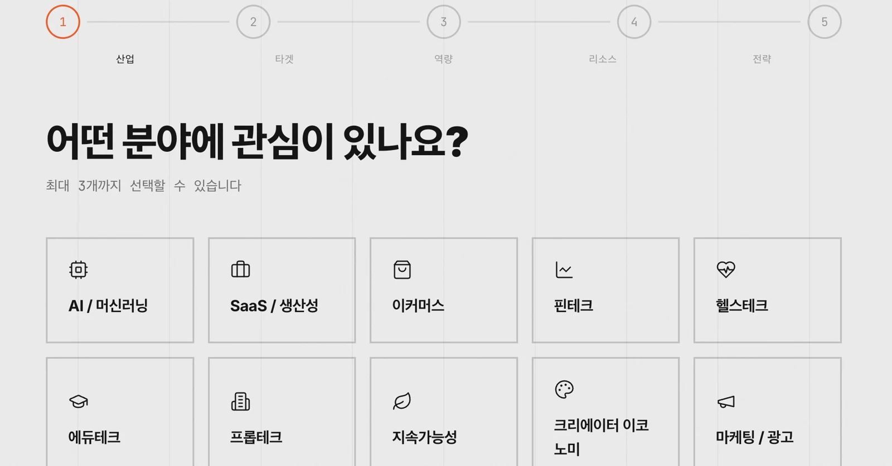
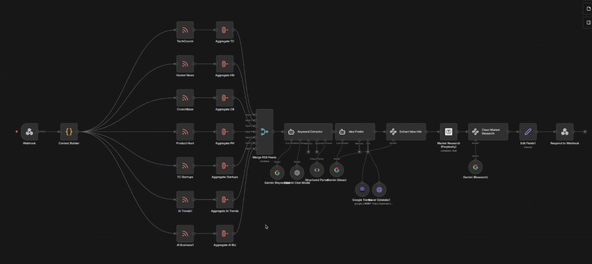

BUSINESS · AI BUILDING / 2026
아이디어 탐색을 고객의 첫 경험으로
AI로 사업을 시작하고 싶지만 아이템을 고르지 못하는 고객을 위해, 자신의 상황에 맞는 아이디어를 탐색하는 기능을 만들었습니다. 교육사업의 기획부터 판매와 운영까지 함께 맡았습니다.
BILLDERS / IDEA FINDER
나에게 맞는 사업아이템 찾기

WORKFLOW
고객 입력→n8n→AI 아이템 탐색
Railway 배포 · 웹훅 연결사업과 고객 접점의 기획·구현을 주도했으며, 교육 콘텐츠는 동료와 함께 구성했습니다.
고객은 만들고 싶었지만, 무엇을 만들지 몰랐습니다.
비개발자가 AI로 서비스를 만들고 수익화를 배우는 교육사업을 운영했습니다. 고객은 아이템 선정에 어려움을 겪었고, 정보 중심의 랜딩에서는 이메일 등록 참여가 낮았습니다.
BEFORE
교육 소개를 읽고 하단에 이메일 입력
AFTER
관심과 상황을 선택하며 사업아이템 탐색
교육 소개보다, 고객의 첫 고민을 풀어보기로 했습니다.
관심 분야와 가용 자금 등 고객의 상황을 선택하면 사업아이템을 탐색할 수 있는 체험형 랜딩을 제안했습니다. 아이디어를 확인하는 과정에 이메일 등록을 연결했습니다.

랜딩을 만들고, 고객을 만나는 과정까지 운영했습니다.
Railway에 n8n을 배포하고 웹훅으로 랜딩의 요청을 처리하도록 구성했습니다. n8n을 백엔드로 활용해 AI 아이템 탐색 기능을 연결했습니다.
유튜브와 Threads 콘텐츠로 홍보하고 UTM으로 유입을 구분했습니다. 기존 고객에게 안내 메일을 보낸 뒤 후속 상담 전화를 진행하며 판매와 교육 운영까지 맡았습니다.


직접 만든 접점이 상담과 수강으로 이어졌습니다.
랜딩에서 이메일 등록과 상담 신청이 발생했고, 유료 수강으로 이어진 사례도 확인했습니다. 고객의 고민을 기능으로 만들고, 홍보·상담·교육 운영까지 연결한 경험입니다.
OUTCOME
이메일 등록과 상담 신청이 발생했고, 유료 수강으로 이어진 사례를 확인했습니다.